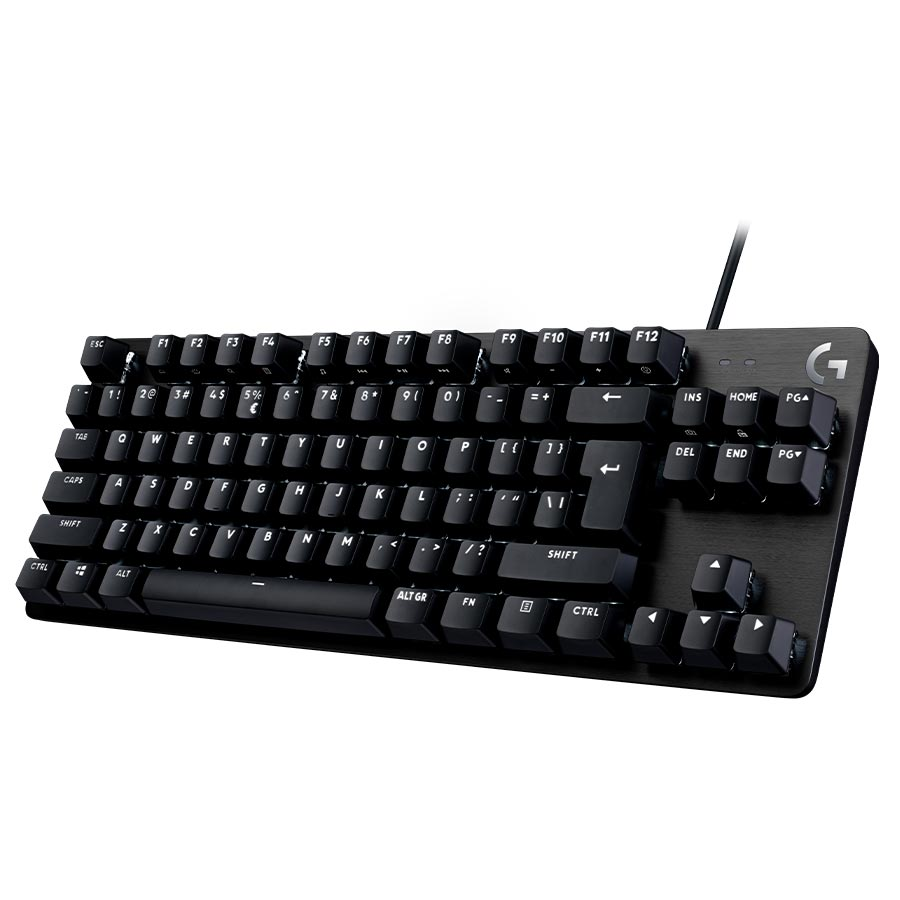

Es un dispositivo de entrada, en parte inspirado en el teclado de las máquinas de escribir, que utiliza un sistema de puntadas o márgenes, para que actúen como palancas mecánicas o interruptores electrónicos que envían toda la información a la computadora o al teléfono móvil.
